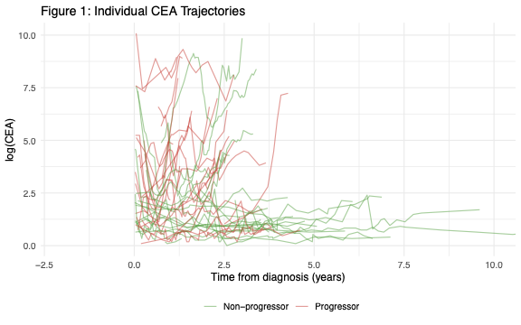
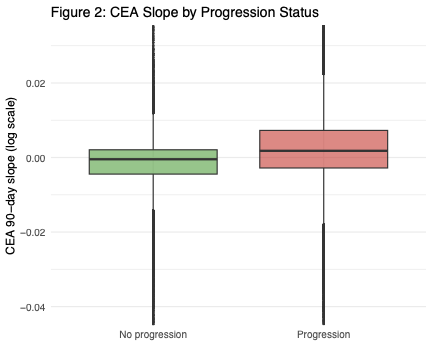
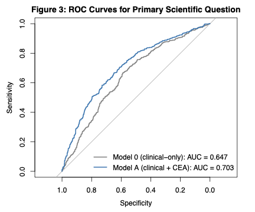
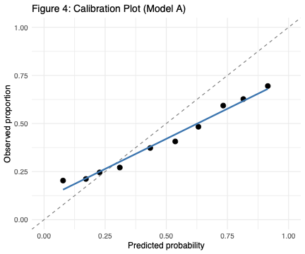
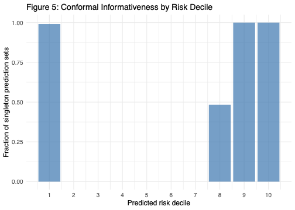

About
The MSK-CHORD 2024 release integrates structured clinical data, somatic mutation calls, and longitudinal timeline events (labs, imaging, treatment, progression) for roughly 25,000 patients across five cancer types. We focused on the colorectal cancer subset (5,543 patients), which carries the richest longitudinal carcinoembryonic antigen (CEA) data — a median of ~12 measurements per patient.
Research question. Do longitudinal CEA trajectory features — specifically the 90-day slope and within-patient variability — improve 180-day disease progression prediction beyond standard clinical variables, and do genomic covariates add further discriminative value on top of that?
We built a landmark prediction framework: each CEA measurement defines a landmark time t (in days from CRC diagnosis), features are constructed strictly using data available at or before t, and the outcome is whether a progression assessment of "Y" occurs in the window (t, t+180].
Methods
After filtering to patients with at least 3 CEA measurements, a computable 90-day slope at the landmark, and at least one assessable progression event in the 180-day window, the analytic cohort comprised 3,950 patients contributing 68,272 landmarks (overall progression rate 57.4%). Patients were split 70/30 at the patient level (seed 629).
We fit three models:
- Model 0 — Clinical-only GLMM. Mixed-effects logistic regression with random patient intercept; covariates: time since diagnosis, treatment class, age, sex, stage, MSI status, prior medication.
- Model A — Clinical + CEA-trajectory GLMM. Adds current log(CEA), 90-day CEA slope, and CEA coefficient-of-variation to Model 0.
- Model B — Genomic LASSO. L1-penalized logistic regression with Model A covariates plus TMB and binary indicators for the 10 most recurrently mutated CRC genes (APC, TP53, KRAS, PIK3CA, FBXW7, SMAD4, TCF7L2, ARID1A, SOX9, BRAF). λ tuned by patient-level 5-fold CV.
Discrimination (AUC), calibration slope on the logit scale, and Brier score were reported on the held-out test set using one eligible landmark per patient to preserve independence. We compared AUCs with the DeLong test. Split-conformal inference gave finite-sample 90% prediction sets for the binary outcome.
Key Findings
- Adding CEA-trajectory features to clinical covariates raises test AUC from 0.647 → 0.703 (DeLong p = 3.6 × 10−10).
- The 90-day log-CEA slope is the single strongest predictor; on the clinically meaningful scale of +0.01 log-CEA/day it corresponds to OR ≈ 1.26.
- Adding TMB and the 10 top mutated genes via LASSO does not move AUC (0.703 on the shared subset, DeLong p = 0.98) but modestly improves the calibration slope (0.52 → 0.64).
- Split-conformal prediction achieves 90.1% empirical coverage; 34.7% of test patients receive a singleton set, concentrated at the extremes of predicted risk.
Progressors show higher and rising log-CEA over time; non-progressors remain flat.

The 90-day CEA slope distribution is shifted upward in landmarks followed by progression.

CEA-trajectory features give a clear discriminative gain over clinical-only.

Model A is well-ranked but systematically overconfident at the extremes.

Conformal Prediction Sets
Using a calibration split from the training set (one landmark per patient for exchangeability), we compute nonconformity scores s = 1 − p̂(true class) and threshold at the (1−α)-conformal quantile (α = 0.10).
On the test set, empirical coverage is 90.1% (target ≥ 90%). 34.7% of patients receive a singleton set {0} or {1}; the remainder receive the ambiguous set {0, 1}. Informativeness is U-shaped in predicted risk — the model is nearly always decisive at the extremes and abstains in the middle, which is clinically the right behavior.
Singleton coverage peaks at the extremes of predicted risk.

Team
- Yanan Fang · University of Michigan, Biostatistics
- Biostat 629 — Case Studies in Health Big Data, April 2026